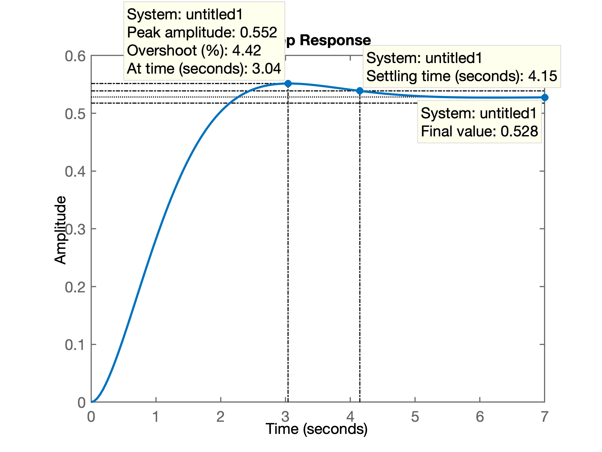
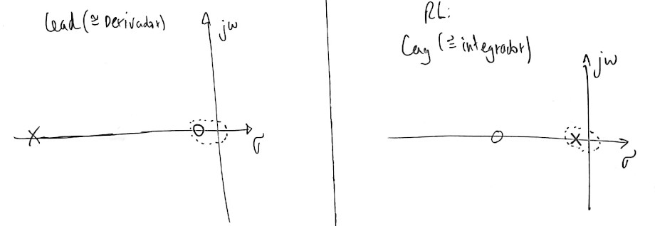

Referente ao Projeto de Controladores usando método do Lugar Geométrico das Raízes (ou Root-Locus).
Enunciado geral:
Projetar ...
\[ G_1(s) = \dfrac{40(s+6)}{3(s+10)(s^2+2s+2)} \]
Requisitos de controle:
Ingressando com os dados daplanta no Matlab:
>> den1 = conv( [0 1 10], [1 2 2] );
>> G1 = tf ( 40*[1 6], 3*den1);
>> zpk(G1)
ans =
13.333 (s+6)
---------------------
(s+10) (s^2 + 2s + 2)
Continuous-time zero/pole/gain model.
>> 40/3
ans = 13.3333
>> Calculando fator de amortecimento, \(\zeta\), em função do overshoot, \(\%OS\):
>> format compact % matlab mostra resultados de forma mais compacta
>> OS=10;
>> zeta=(-log(OS/100))/(sqrt(pi^2+(log(OS/100)^2)))
zeta = 0.5912
>>Sintonizando controlador Proporcional:
>> % sintonizando controlador proporcional
>> rlocus(G1)
>> hold on;
>> sgrid(zeta,0)
>> % fazendo apropriado zoom no gráfico do RL
>> [K, polosMF]=rlocfind(G1)
Select a point in the graphics window
selected_point =
-1.0434 + 1.4125i
K =
0.1321
polosMF =
-9.9143 + 0.0000i
-1.0428 + 1.4126i
-1.0428 - 1.4126iO que gera o gráfico:
>> % fechando malha...
>> ftmf_Kp=feedback(K*G1, 1);
>> % verificando resposta
>> figure; % abrindo outra janela gráfica
>> step(ftmf_Kp)
>> % Verificando $y(\infty)$
>> >> dcgain(ftmf_Kp)
ans = 0.3456
>> erro_Kp=(1-dcgain(ftmf_Kp))*100
erro_Kp = 65.4361
>> Segue gráfico da resposta ao degrau para controlador proporcional:

Resumo dos resultados obtidos com Controlador Proporcional:
Partindo para outros controladores:
Equação deste controlador:
\[ C(s)=K_i \cdot \dfrac{1}{s} \]
No Matlab:
>> % incorporando controlador integrador puro
>> C_I=tf( 1, [1 0]);
>> zpk(C_I)
ans =
1
-
s
Continuous-time zero/pole/gain model.
>> Fechando a malha e sintonizando Integrador puro:
>> % fechando malha com Integrador Puro
>> ftma_I=C_I*G1;
>> % confirmando a FTMA(s):
>> zpk(ftma_I)
ans =
13.333 (s+6)
-----------------------
s (s+10) (s^2 + 2s + 2)
Continuous-time zero/pole/gain model.
>> % traçando o lugar das raízes
>> figure; rlocus(ftma_I)
>> % salvo na figura: G1_rlocus_I_puro.png
>> hold on; zgrid(zeta,0);
>> % realizando o zoom na área de interesse
>> % para posteriormente definir o ganho do controlador
>> [K_I, polosMF]=rlocfind(ftma_I)
Select a point in the graphics window
selected_point =
-0.6261 + 0.8493i
K_I =
0.1041
polosMF =
-10.0068 + 0.0000i
-0.6275 + 0.8567i
-0.6275 - 0.8567i
-0.7382 + 0.0000i
>> % figura salva como: G1_rlocus_I_puro.pngSegue gráfico do RL com o Integrador Puro, já mostrando o ganho usado para sua sintonia.
Equação final do controlador:
\[ C(s) = 0,1041 \cdot \dfrac{1}{s} \]
Incorporando entrada degrau à referência para verificar a resposta temporal obtida com a introdução deste controlador, no Matlab:
>> ftmf_I=feedback(K_I*ftma_I, 1);
>> figure; step(ftmf_I)
>> % figura salva como: G1_step_C_I_puro.pngO que gera o gráfico:
De onde se percebe que poderíamos ter adotado um ganho ainda maior, dado que mau foi produzido um overshoot. O sistema quase resultnum num comportamento super-amortecido.
Analisando o gráfico do RL percebemos algums coisas:
em malha-fechada (MF), o sistema resultou com 3 pólos dominantes. Repare que além do par de pólos complexos em \(s=-0.6275 \pm j0,8567\), também temos a ocorrência de um polo real em \(s=-0.7382\), ou seja, este polo real é tão "dominante" na resposta quanto o par de pólos complexos. E por estarem tão próximos, a idéia de aproximar a resposta de um sistema de MF para o de um sistema de 2a-ordem com apenas 1 par de pólos complexos desanda, porque neste caso temos um terceiro pólo real muito próximo do par compleo de pólos. Motivo pelo qual a estimativa inicial dos cálculos para \(\zeta\), não se cumprem quando fechamos a malha. Esteja conciente que quanto aproximamos a resposta de um sistema de ordem qualquer para um o de um sistema de 2a-ordem com apenas 1 par de pólos complexos dominantes, nem sempre é isto que acontece, como é o caso aqui.
Este terceiro pólo real dominante é causado pelo própio pólo do integrador (em \(s=0\)) que está sendo atraído pelo próprio zero da planta. Note:
>> pole(ftma_I)
ans =
0.0000 + 0.0000i
-10.0000 + 0.0000i
-1.0000 + 1.0000i
-1.0000 - 1.0000i
>> zero(ftma_I)
ans =
-6
>> Alguém poderia pensar em aumentar o ganho neste momento. Percebe que neste caso em particular, aumentar o ganho implica em 2 consequencias algo contraditórias entre si:
Se o aumento de \(K_i\) for exagerado, o sistema inclusive deixa de ser estável; os pólos complexos passam a ocorrer no semi-plano direito do plano\(-s\). Analizando o RL percebemos que se \(K_i > 0,568\), o sistema em MF ficará instável -- ver próxima figura:

Reparec na figura anterior que com um ganho em torno de \(K_i \approx 0,290\), teremos um pólo real localizado em \(s=-1,57\) mais rápido que o obtido com o ganho anterior (\(K_i=0.1041\), pólo real em \(s=-0.7382\)), mas o overshoot vai aumentar: o matlab estima o overshoot em \(\%OS > 38\%\) e pior, a parte real dos pólos complexos ficarão mais próximo do eixo \(j \omega\), especificamente em \(s=-0,324\), tornando a resposta ainda mais lenta que os pólos de MF obtidos com \(K_i=0,1041\) (que ficavam com a parte real em \(s=-0.6275\)). De fato, um teste fechando a malha com \(K_i=0,290\) resulta em:
>> K_I2=0.290;
>> ftmf_I2=feedback(K_I2*ftma_I, 1);
>> figure; step(ftmf_I, ftmf_I2)
>> legend('Int. Puro (K=0,1041', 'Int. Puro (K=0.290)')Gerando o gráfico à seguir:
Seja a planta definida pela equação:
\[ G_2(s)=\dfrac{80}{(s+8)(s+5)(s+2)} \]
Tentar projetar diferentes controladores para atender aos seguintes requisitos de controle:
Realizado na aula de 31.10.2019
Resolução iniciada a partir deste ponto...
Entrando com dados da planta:
>> G2=tf(80, poly([-8 -5 -2]));
>> zpk(G2)
ans =
80
-----------------
(s+8) (s+5) (s+2)
Continuous-time zero/pole/gain model.Procedimento:
Inicia-se pelo projeto do controlador de Avanço de Fase (Lead) para garantir os requisitos de controle temporais, no caso, tentar atender \(t_s\).
Depois se parte para o projeto do controlador de Atraso da Fase que visa limimitar o erro de regime permanente ao valor especificado.
O diagrama de blocos referente ao projeto deste controlador fica:

Revisando a estrutura de controladores Lead e Lag temos:

Iniciamos pelo projeto do controlador de Avanço (Lead). Para tanto, temos que analizar o RL para avaliar posições adequadas para seu par pólo-zero.
O zero do controlador Lead deve estar o mais próximo possível da origem do plano-s. Mas devemos lembrar que este zero tentará atrair o pólo mais lento da planta localizado em \(s=-2\).
Opções:
Para os dois casos, o pólo deste controlador fica localizado na direção de \(s=-\infty\). Escolhemos posicionar o mesmo, mais distante (na direção de \(-\infty\)) que o pólo mais lento da planta localizado em \(s=-8\), posicionando-o em: \(p_{Lead}=-12\).
Esboçando os RLs teremos:

Para a opção 1, a equação do Lead ficaria algo como:
\[ C_{Lead1}(s)=K \cdot \dfrac{(s+1)}{(s+12)} \]
Neste caso, se percebe pelo RL que ocorrerá um pólo real de MF entre -2 à 0 no plano-s, com o pólo real indo na direção da origem do plano-s, ou seja, caracterizando uma resposta temporal bastante lenta.
Para a opção 2, a equação do Lead ficaria algo como:
\[ C_{lead2}(s)=K \cdot \dfrac{(s+4)}{(s+12)} \]
Nesta opção, ocorrerá um pólo real de MF entre o pólo mais lento da planta (em \(s=-2\)) e o zero alocado para o controlador. Neste caso, este pólo se afasta da origem do plano-s e fica mais distante do mesmo, em comparação com a opção 1.
Nos 2 casos, ocorrerão 3 pólos dominantes (mais próximos da origem do plano-s): um par conjugado complexo que caracteriza respostas típicas de sistemas de 2a-ordem com \(0 < \zeta < 1\) e um pólo real que irá distorcer a resposta temporal esperada para o par de pólos complexos.
Seguindo com a opção 2 para o controlador Lead, teremos:
>> % opção 2...
>> G_lead=tf([1 4],[1 12]);
>> ftma_lead=G_lead*G2;
>> rlocus(ftma_lead)O último comando gera o RL, mas vamos aproveitar e incluir onde deveriam estar os pólos de MF para cumprir com os requisitos de controle especificados para esta planta:
>> % calculando posição desejada para os pólos de MF
>> OS=20; % overshoot máximo especificado
>> ts=1.1; % tempo máximo de assentamento especificado
>> zeta=(-log(OS/100))/(sqrt(pi^2+(log(OS/100)^2)))
zeta =
0.4559
>> wn=4/(zeta*ts)
wn =
7.9754
>> wd=wn*sqrt(1-zeta^2)
wd =
7.0981
>> % wd = parte imaginária dos pólos de MF
>> sigma = wn*zeta % calculando parte real dos pólos de MF
sigma =
3.6364
>> % montando vetor dos pólos de MF
>> polos_mf=[-sigma+i*wd -sigma-i*wd]
polos_mf =
-3.6364 + 7.0981i -3.6364 - 7.0981i
>> figure(1) % foco no RL anterior
>> hold on % comando para sobrepor gráfico dos pólos de MF
>> % desejados sobre o RL anterior
>> plot(polos_mf,'r+')
>> sgrid(zeta,wn) % Aproveitando para sobrepor linhas guias do zeta e wnPodemos agora definir um ganho para este controlador com o objetivo de testar se esta proposta permite atender aos requisitos temporais desejados:
>> [K_Lead,aux]=rlocfind(ftma_lead) % encontrando o valor do ganho do Lead
Select a point in the graphics window
selected_point =
-3.3842 + 6.6729i
K_Lead =
7.7172
aux =
-16.9761 + 0.0000i
-3.0687 + 6.5241i
-3.0687 - 6.5241i
-3.8864 + 0.0000i
>> % testando o lead...
>> ftmf_lead=feedback(K_Lead*ftma_lead, 1); % fechando a malha com o Lead
>> figure; step(ftmf_lead) % verificando resposta
>> % alguns valores encontrados:
>> % ts=1,22; %OS=19.3%
>> % calculando erro em regime permanente do Lead
>> (1-dcgain(ftmf_lead)/1)*100
ans =
27.9925
>> % Ou seja, quase 28% de erro, tudo bem porque o controlador Lag vai corrigir este erro.A figura à seguir confirma o RL e mostra o ganho adotado inicialmente:
E a seguinte resposta ao degrau é encontrada:

Porém, reparando no RL gerado, percebemos que provavelmente adotar um ganho mais baixo para o Lead, vai permitir afastar mais os pólos complexos conjugados do eixo \(j\omega\), apesar de repercutir num erro maior em regime permanente (e também num \(\%OS\) menor.) A questão do erro será corrigida com a introdução do controlador Lag:

Optando por reduzir o ganho do controlador Lead para \(K_{Lead}=5\), teremos:
>> K_Lead=5;
>> % testando em quanto ficou ts com este ganho
>> ftmf_lead=feedback(K_Lead*ftma_lead, 1);
>> figure; step(ftmf_lead)
>> % com este valor de ganho:
>> % ts(Lead)=0,964; y(\infty)=0,625 -- isto é, o erro aumentou
>> (1-dcgain(ftmf_lead))/1*100
ans =
37.5000
>> % Se espera compensar o aumento do erro, com o controlador Lag.Segue abaixo a nova resposta temporal encontrada:

Continuando com o projeto do controlador Lag...
Temos que analizar agora opções para introdução do par pólo-zero do controlador Lag. O objetivo pretendido com a inclusão deste controlador é reduzir o erro em regime permanente. Para tanto, convêm aproximar seu pólo o máximo possível da origem do plano-s.
Analizando opções possíveis no RL, temos:

A opção "a": nesta proposta o pólo do controlador ficaria entre \(0< p_{Lag} < -2\), resultando num RL com ponto de partida ("break-out") entre o pólo mais lento da planta (em \(s=-2\)) e o pólo do controlador Lag. Isto resultará pólos de MF complexos lentos.
A opção "b": neste caso, o pólo do controlador ficaria entre \(-2 < p_{Lag} < -4\) (em \(s=-4\) está o zero do controlador Lead). Esta proposta parece mais promissora porque o RL resultará num ponto de partida que deve ocorrer entre o pólo mais lento da planta (em \(s=-2\)) e o pólo do controlador (Lag) que neste caso, estaria mais afastado do eixo \(j \omega\), propiciando uma resposta temporal mais rápida à despeito de uma menor redução no erro em regime permanente que o pretendido.
Efetivando os cálculos no Matlab para avaliar a proposta:
>> % Definindo o Lag
>> C_Lag=tf([1 6],[1 3])
C_Lag =
s + 6
-----
s + 3
Continuous-time transfer function.
>> ftma_lead_lag=C_Lag*G_lead*G2;
>> % RL final
>> figure; rlocus(ftma_lead_lag)
>> hold on
>> plot(polos_mf,'m+') % plota os pólos de MF desejados em magentaO RL resultante aparece na figura abaixo:

Analisado o RL anterior se percebe que a proposta não permitiu definir um RL que passe próximo dos pontos desejados para os pólos de MF. Eventualmente deslocar o zero do controlador Lag para um ponto mais distante que \(s=-6\) na direção para \(-\infty\), possa melhorar o RL. Avaliando...
>> % Realizando um ajuste no Lag...
>> C_Lag=tf([1 10],[1 3]) % afastando o zero do Lag...
C_Lag =
s + 10
------
s + 3
Continuous-time transfer function.
>> ftma_lead_lag=C_Lag*G_lead*G2;
>> % verificando como ficou o RL...
>> figure; rlocus(ftma_lead_lag)
>> hold on;
>> plot(polos_mf,'m+')
>> sgrid(zeta,wn)
>> sgrid(zeta,wn)Este ajuste causou pouco impacto no RL, conforme pode ser visto na próxima figura:

Este último RL já aponta (Data cursor) o local escolhido para o ganho de malha fechada do controlador Lead-Lag: \(K=1,85\). Fechando a malha com este ganho:
>> K_lead_lag=1.85;
>> ftmf_lead_lag=feedback(K_lead_lag*ftma_lead_lag, 1);
>> figure;
>> step(ftmf_lead_lag)
>> erro=(1-dcgain(ftmf_lead_lag))/1*100
erro =
32.727
>> diary offObtendo o resultado:

Onde podemos observar os seguintes resutlados:
Estes resultados foram obtidos com o seguinte controlador:
\[ C_{\text{Lead-Lag}}=1,85 \cdot \underbrace{\dfrac{(s+4)}{(s+12)}}_{\text{Lead}} \cdot \underbrace{\dfrac{(s+10)}{(s+3)}}_{\text{Lag}} \]
Analisando o RL anterior, percebemos que eventualmente alguns ajustes podem melhorar o desempenho deste controlador:
Teríamos então:
\[ C_{\text{Lead-Lag}}=1,85 \cdot \underbrace{\dfrac{(s+6)}{(s+12)}}_{\text{Lead}} \cdot \underbrace{\dfrac{(s+10)}{(s+2,2)}}_{\text{Lag}} \]
Testando...
>> C_lead_lag2=tf(poly([-6 -2.2]),poly([-12 -10]));
>> zpk(C_lead_lag2)
ans =
(s+6) (s+2.2)
-------------
(s+12) (s+10)
Continuous-time zero/pole/gain model.
>> ftma_lead_lag2=C_lead_lag2*G2;
>> figure; rlocus(ftma_lead_lag2);
>> hold on;
>> plot(polos_mf,'m+')
>> sgrid(zeta,wn)
>> axis([-15 2 -10 10]) % realizando "zoom" na região de interesse
>> [K_lead_lag2,aux]=rlocfind(ftma_lead_lag2) % encontrando o ganho
Select a point in the graphics window
selected_point =
-4.6570 + 8.1860i
K_lead_lag2 =
11.8172
aux =
-19.6899 + 0.0000i
-4.6078 + 8.1588i
-4.6078 - 8.1588i
-5.9469 + 0.0000i
-2.1476 + 0.0000i
>> % o ganho (mais elevado) foi colocado no prolongamento da linha guia
>> % correspondente ao zeta desejado - ganho maior: menor erro
>> % fechando a malha
>> ftmf_lead_lag2=feedback(K_lead_lag2*ftma_lead_lag2, 1);
>> figure; step(ftmf_lead_lag2);
>> erro=(1-dcgain(ftmf_lead_lag2))/1*100
erro =
43.4803
>> save planta2Resulta o seguinte RL (bastante mais promissor):

E a seguinte resposta ao degrau:

Infelizmente percebemos que não foi possível reduzir o erro para \(e(\infty)< 20\%\). Muito provavelmente porque o pólo do controlador Lag deveria estar mais próximo do eixo \(j \omega\) para compensar o erro provocado pelo controlador Lead. Mas esta alteração implica em todo um novo estudo. E eventualmente só com introdução de ação integral (PID) se consiga atingir mais facilmente os requisitos de controle especficados para esta planta.
Seja a planta definida pela equação:
\[ G_3(s)=\dfrac{24(s+55)(s+7)}{77(s+15)(s+4)(s+2)} \]
Tentar projetar diferentes controladores para atender aos seguintes requisitos de controle:
Prof. Fernando Passold